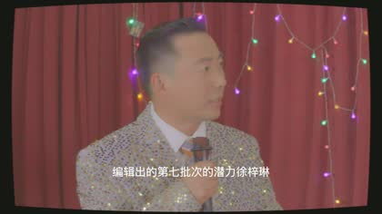

副作用 // 00:08:03
蝶泉中心先露出
林晚手中广告被处理后可见“蝶泉中心”“全封闭式形体重塑计划”，这是昃伦生命科学线的第一层外壳。
以下不是隐藏设定，而是已经出现在成片字幕和画面里的昃伦线索。官网隐藏页应当优先呈现这些“可回看片段”， 再引导观众继续挖三大部门和 8 个异常之间的关系。
林晚手中广告被处理后可见“蝶泉中心”“全封闭式形体重塑计划”，这是昃伦生命科学线的第一层外壳。
画面直接出现 `TZELEM LIFE SCIENCES` 标识，字幕点明“昃伦生命科学有限公司”，主营基因编辑。

画面侧栏可见 `COGNITIVE / LIFE_SCI / GOVERNANCE`，与昃伦集团官网材料中的三大业务线完全对应。
“昃伦集团”“全球顶尖的生命科学巨头”“他们的口号是修正生命”“昃伦的这种营养剂”。
昃伦不直接制造“恐怖”。它制造解决方案：帮人类删除痛苦、修正缺陷、整理真相。 异常发生在解决方案失控之后。
虚拟现实、梦境构建、意识上传。它提供比现实更温柔的牢笼，也负责给遗憾补一层滤镜。
基因编辑、辅助生殖、代谢修正。它把身体当成容器，把出生权当成筛选结果。
全域监控、舆情清洗、历史修正。它不争辩真相，只决定哪些真相允许被看见。
在“正片实锤”之外，还有一批没有直接露出昃伦名称、但明显属于同一企业语言系统的项目线索。 这些适合做成第二层解谜：观众先认出昃伦，再回看片子里那些早已出现的伏笔。

《一屋囚》在 06:29-08:47 连续出现“完美新生命、最优数据、基因模型、完美模板、下一批次模拟”。

2007 年被做成可回访的情感代餐，数据被赋予生命，遗憾被包装成一次重逢。

推送、旁白、误会与窥视形成闭环。系统不只是观察情绪，它诱导情绪走向。

《副作用》明确把蝶泉中心、基因干预减肥、代谢修正、特供食品和昃伦营养剂接到同一条线。
这一层适合后续做成互动：用户每点开一条异常，系统都会给出一份“企业处理意见”， 表面是公关话术，背后是灭证流程。
真正的慈悲，不是给予选择，而是剥夺选择的必要。 当生命、记忆与真相被精准安排好，凡人便不必再承担自由意志带来的痛苦。